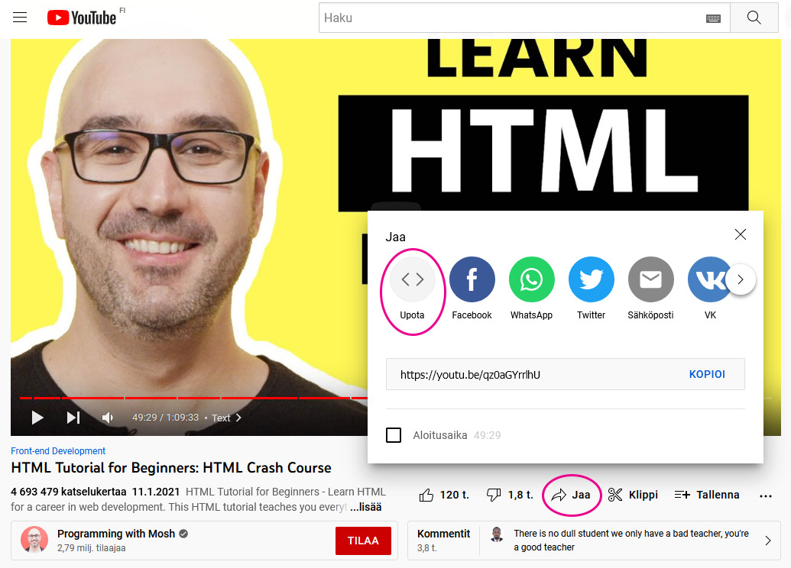
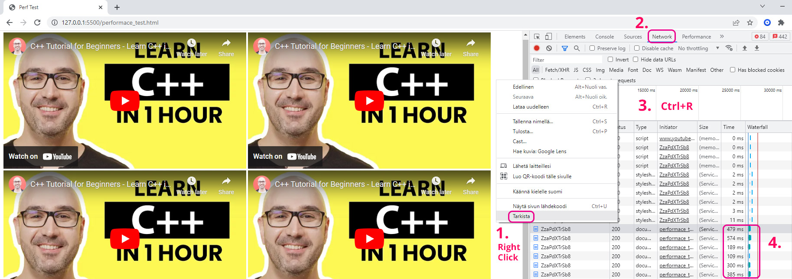
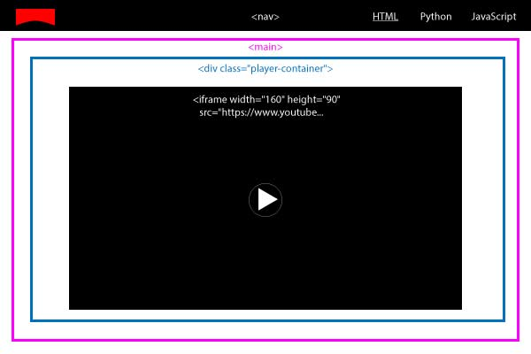
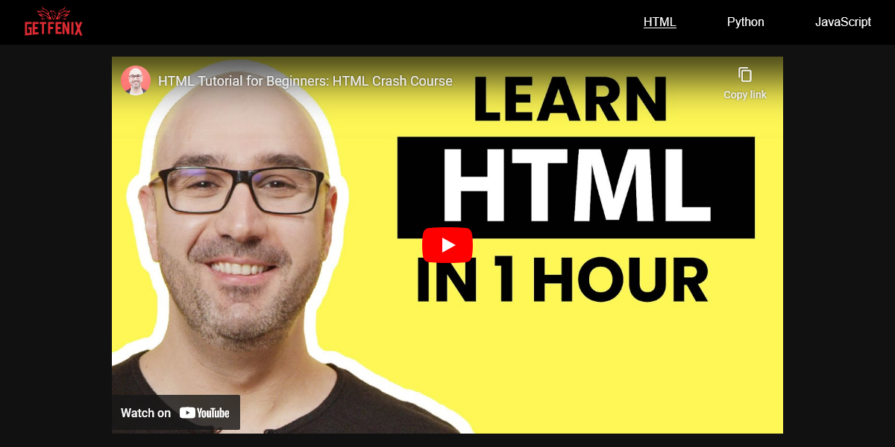
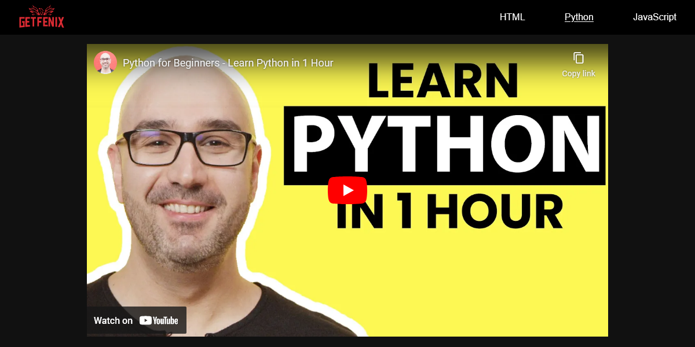
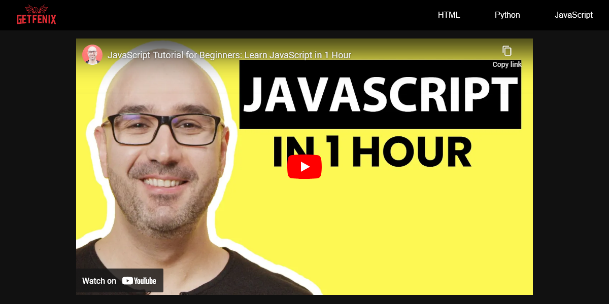

YouTube videon upotus
Teoria
Iframella voidaan upottaa sisältöä nettisivulle toisesta palvelustaUpotettu elementti voi olla esim. video, kartta tai vaikka musiikkisoitin
Iframe voi sisältää myös kokonaisen nettivisun, jolloin se on kuin ikkuna toiselle sivulle
Tehtävä 1 - Testaa upotusta
Tee kansioon demos/d8 tiedosto test.html
Lisää test.html tiedostoon sivupohja (Boilerplate ) tuttuun tapaan ! + Tab
Seuraa case-esimerkkejä alla
Case 1: Yksi iframe upotus
Jos sivulle ei tule montaa upotettua videota, niin voit käyttää tavallista YouTuben tarjoamaa iframe-upotuskoodia
Lisää sivulle haluamasi video upotuskoodilla
Klikkaa videon alta Jaa , sitten Upota ja kopioi iframe-koodi nettisivullesi
Linkki esimerkin videoon: https://www.youtube.com/watch?v=qz0aGYrrlhU
Case 2: Useita iframe upotuksia
Kokeile lisätä sivulle peräkkäin useita iframe-upotuksia (esim. 10-30)
Hidastuuko sivun lataus?
Voit tarkastella sivuston latautumista selaimen kehittäjä-työkalujen Network-välilehdellä
Paina tyhjässä kohtaa sivua oikealla hiiren näppäimellä ja valitse Tarkista/Inspect
Valitse Netwotk -välilehti
Päivitä sivu tai paina Ctrl + R
Selaa kohtaan, jossa on YouTube-videon toistotunnuksella tehtyjä GET-requesteja
Montako millisekuntia video-upotteen lataus kestää?

Tehtävä 2 - Usean sivun kokonaisuus
Screenshotit ja kansiorakenne tehtävän lopussa
Jätetään test.html rauhaan
Lisää uusi tiedosto index.html ja lisää HTML-Boilerplate (! + Tab)
Lisää style.css ja linkitä se headiin
Lisää index.html sivulle navigaatio (nav), jonka sisällä on svg-logo (yllä) ja 3 tekstilinkkiä
Jos teit koodausaiheisen sivuston, niin linkit voivat olla (HTML, Python, JavaScript)
Tee navigaatioon linkit muihin tiedostoihin (jotka luot kohta)
<ul>
<li><a href="index.html">HTML</a></li>
<li><a href="py-tutorial.html">Python</a></li>
<li><a href="js-tutorial.html">JavaScript</a></li>
</ul>
Tee kopio index.html tiedostosta ja nimeä se aiheeseen sopivasti (esim. py-tutorial.html)
Tee toinen kopio ja nimeä sekin aiheeseen sopivasti (esim. js-tutorial.html)
Vaihdan kunkin sivun iframeen aiheeseen sopiva video
Tee sivun taustasta tumma ja laita linkeille näkyvä väri
Poista linkkien alleviivaus CSS:llänav a, nav a:visited{
text-decoration: none;
}
Tee CSS-class nimeltä "active", joka palauttaa linkin alleviivauksen (text-decoration: underline;)
Lisää "active"-class, index.html-sivulle navigaation linkkiin, jossa lukee HTML
<li><a href="index.html" class="active">HTML</a></li>
Lisää "active"-class, py-tutorial.html-sivulle navigaation linkkiin, jossa lukee Python
Lisää "active"-class, js-tutorial.html-sivulle navigaation linkkiin, jossa lukee JavaScript
Activen tarkoitus on kertoa käyttäjälle, millä sivulla hän on parhaillaan
Kansiorakenne
html_css_basics
|
├── demos
| |
│ └── d8
| |
│ ├── test.html
│ ├── style.css
│ ├── index.html
│ ├── py-tutorial.html
│ ├── js-tutorial.html
|
Layout

Mallit
index.html
"HTML"-linkki on alleviivattu active-classilla,

py-tutorial.html
"Python"-linkki on alleviivattu active-classilla,

js-tutorial.html
"JavaScript"-linkki on alleviivattu active-classilla,

Responsiivinen videon upottaminen
Onneksi joku on löytänyt ratkaisun YouTube videon upottamiseen siten, että videon koko skaalautuu automaattisesti ruudun leveyden ja korkeuden mukaan.
/*
CodePen by Caleb Misclevitz
iframe object-fit: contain
https://codepen.io/calebmisclevitz/pen/xMXZXd
*/
.player-container {
width: 100%;
height: 100%;
display: flex;
justify-content: center;
align-items: center;
}
iframe {
width: calc(177.78vh);
height: calc(100vh);
box-sizing: border-box;
padding: 2.5rem 4.4444444444rem;
}
@media (max-aspect-ratio: 16/9) {
iframe {
width: calc(100vw);
height: calc(56.25vw);
padding: 1.40625rem 2.5rem;
}
}